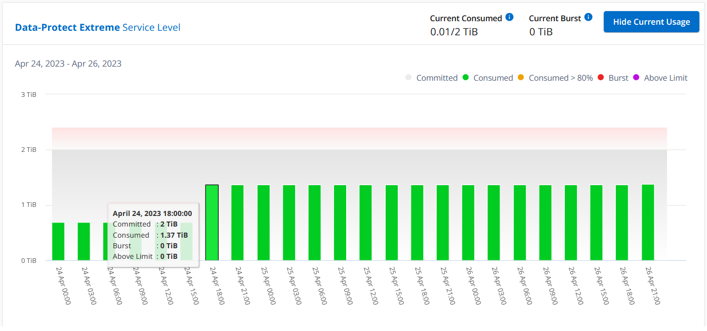
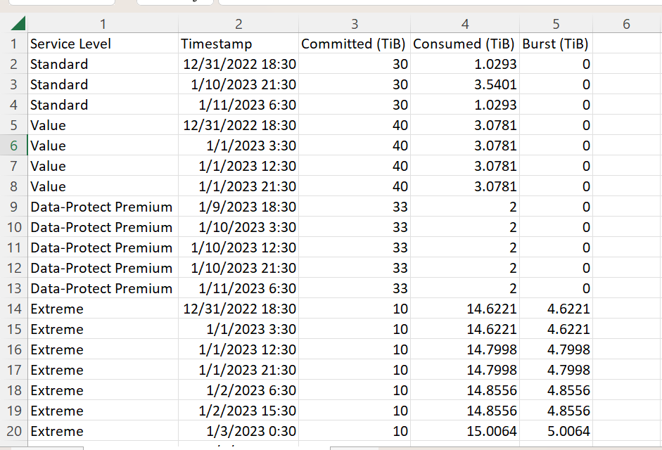

NetApp Keystone services
NetApp Keystone services
Digital Advisor dashboard and reporting for Keystone
 Suggest changes
Suggest changes
The Active IQ Digital Advisor (Digital Advisor) dashboard provides you with the capability of monitoring the usage pertaining to your NetApp Keystone subscriptions and generating reports. On subscribing to Keystone services, you can view the details of your subscription and usage on the Keystone Subscriptions widget on the Digital Advisor dashboard.

|
The information available here applies to both ONTAP and StorageGRID. Exceptions have been pointed out in the relevant sections. |
For information about the Keystone Digital Advisor widget, see View capacity utilization with NetApp Keystone Subscription.
To view your Keystone subscription and usage details, perform the following steps:
-
Log in to Digital Advisor. You can see the Keystone Subscriptions widget that summarizes the capacity usage against your purchased Keystone services.
-
On the Keystone Subscriptions widget, click View More Details to view the usage details and alerts on your volumes on the Keystone Subscriptions page. Alternately, from the left navigation pane, go to GENERAL > Keystone Subscriptions.
The details of the subscriptions, usage charts for each service level, and volume details are displayed in the different tabs on the Keystone Subscriptions screen.
|
|
Capacity consumption in Keystone subscriptions is displayed in TiBs on the dashboards and reports, and is rounded off to two decimal places. If the usage is less than 0.01 TiB, then the value is shown as 0 or No Usage. The data on these screens is displayed in UTC time (server timezone). When you enter a date for query, it is automatically considered to be in UTC time.
|
For information about usage metrics, see Service level metrics and definitions. For information about different capacities used in Keystone, see Keystone service capacity definitions.
Subscriptions
You can view a list of your subscriptions in the Subscriptions tab.

You can see the following information. For certain fields and columns, you might see information or warning icons and tooltips that provide you with additional information about the data.
-
Subscription Number: The subscription number of the Keystone subscription assigned by NetApp.
-
Tracking ID: The tracking ID assigned at the time of subscription activation. This is a unique ID for each subscription and site, used for tracking the subscription.

If your subscription has a data protection service level or rate plan assigned, then a tooltip helps you identify the tracking ID of the partner subscription in a MetroCluster setup. To know how to view detailed consumption by partner subscriptions in a MetroCluster configuration, see Reference charts for data protection. -
Usage Type: You might have subscribed to multiple Keystone (version 1) or Keystone STaaS (version 2) subscriptions. The rate plan rules for the service levels might vary for the two subscription types. By looking at the value in this column, you know whether the usage type is billed as per the provisioned or logical usage for either
v1orv2. For more information about Keystone STaaS, see Keystone STaaS Documentation. -
Billing Period: The billing period of the subscription, such as monthly, quarterly, or annual.
-
Start Date: The start date of the subscription.
-
End date: The end date of the subscription. If you have a monthly-billable subscription that renews automatically every month, you see
Month-on-monthinstead of the end date. Based on this date, you might see information messages for subscriptions that are nearing expiry or have auto-renewal policies attached. -
Usage Status: Indicates how much of the subscription has been used or overused. You can sort the list by this column if you want to view the highest consumption records.
-
 : Clicking this icon for a subscription opens the Current Usage tab with additional details of that subscription.
: Clicking this icon for a subscription opens the Current Usage tab with additional details of that subscription. -
 : Clicking this icon opens the Capacity Trend tab where you can see the historical usage data for each service level included in this subscription.
: Clicking this icon opens the Capacity Trend tab where you can see the historical usage data for each service level included in this subscription.
You can refer to the following usage indicators to check the usage status of each subscription:

 : No capacity usage recorded against the committed capacity of the service level
: No capacity usage recorded against the committed capacity of the service level
 : The consumption is normal, within 80% of the committed capacity
: The consumption is normal, within 80% of the committed capacity
 : Maximum consumption, that is, the usage is about to reach 100% or more of the committed capacity. The Consumed column displays this indicator for any consumption above 80% of the committed capacity
: Maximum consumption, that is, the usage is about to reach 100% or more of the committed capacity. The Consumed column displays this indicator for any consumption above 80% of the committed capacity
 : The consumption is within the burst limit. The burst consumption is the consumption that tops the 100% committed capacity of a service level, and is within the agreed-upon burst usage limit, such as 120%
: The consumption is within the burst limit. The burst consumption is the consumption that tops the 100% committed capacity of a service level, and is within the agreed-upon burst usage limit, such as 120%
 : Indicates consumption above the stipulated burst limit
: Indicates consumption above the stipulated burst limit
Current Usage
To know the details of your subscriptions, click the Current Usage tab, and select the required subscription number.

Details, such as the service level name, committed, consumed, available capacities, and current and accrued burst usage are displayed in TiB.
|
|
The |
For information about your Keystone storage services and the relevant service levels, see Service levels.
Capacity Trend
The Capacity Trend tab displays historical data of your Keystone subscriptions for a specific period. The vertical graphs display the usage details for the selected time range with appropriate indicators for you to compare and generate reports.
-
Click the Capacity Trend tab.
-
Select the required subscription for which you want to view the details. The first subscription in your account name is selected by default.
-
Select Capacity Trend if you want to view the historical data and analyze the capacity usage trend. Select Invoiced Accrued Burst if you want to view the historical burst usage data, for which invoices have been generated. You can use this data to analyze the billed usage as per your invoice.
View capacity trend
Learn more
If you have selected the Capacity Trend option, follow these steps:
-
Select the time range from the calendar icons in the From Date and To Date fields. Select the date range for the query. The date range can be the beginning of the month or the subscription start date to the current date or the subscription end date. You cannot select a future date.
For optimal performance and user experience, limit the date range of your query to three months. -
Click View Details. The historical consumption data of the subscription for each service level is displayed based on the selected time range.
The bar charts display the service level name and the capacity consumed against that service level for the date range. The date and time of the collection are displayed at the bottom of the chart. Based on the date range of your query, the usage charts are displayed in a range of 30 data collection points. You can hover your mouse cursor over the charts to view the usage breakdown in terms of committed, consumed, burst, and above the burst limit data at that data collection point.

The following colors in the bar charts indicate the consumed capacity as defined within the service level. Monthly data across the charts is separated by a vertical line.
-
Green: Within 80%.
-
Amber: 80% - 100%.
-
Red: Burst usage (100% of the committed capacity to the agreed burst limit)
-
Purple: Above the burst limit or
Above Limit.
|
|
A blank chart indicates that there was no data available in your environment at that data collection point. |
You can click the toggle button Show Current Usage to view the consumption, burst usage, and accrual burst data for the current billing period. These details are not based on the date range of the query.
-
Current Consumed: Indicator for the consumed capacity (in TiB) defined for the service level. This field uses specific colors:
-
No color: Burst or above burst usage.
-
Grey: No usage.
-
Green: Within 80% of the committed capacity.
-
Amber: 80% of the committed to the burst capacity.
-
-
Current Burst: Indicator for the consumed capacity within or above the defined burst limit. Any usage within the burst limit agreed upon, for example, 20% above the committed capacity is within the burst limit. Further usage is considered as usage above the burst limit. This field displays specific colors:
-
No color: No burst usage.
-
Red: Burst usage.
-
Purple: Above the burst limit.
-
-
Accrued burst: Indicator for the accrued burst usage or consumed capacity calculated per month for the current billing period. The accrued burst usage is calculated based on the committed and consumed capacity for a service level:
(consumed - committed)/365.25/12.
View invoiced accrued burst
Learn more
If you have selected the Invoiced Accrued Burst option, by default, you can see the monthly accrued burst usage data for the last 12 months that has been billed. You can query by the date range of up to past 30 months. Bar charts are displayed for invoiced data, and if the usage has not yet been billed, you see Pending for that month.
|
|
The invoiced accrued burst usage is calculated per billing period, based on the committed and consumed capacity for a service level. |

This functionality is available in a preview-only mode. Contact your KSM to learn more about this feature.
Reference charts for data protection
Learn more
If you have subscribed to the data protection service, you can view the breakup of the consumption data for the MetroCluster partner sites on the Capacity Trend tab.
For information about data protection, see Data protection.
If the clusters in your ONTAP storage environment are configured in a MetroCluster setup, the consumption data of your Keystone subscription is split in the same historical data chart to display the consumption at the primary and mirror sites for the base service levels.
|
|
The consumption bar charts are split for only base service levels. For data protection service levels, this demarcation does not appear. |
For data protection service levels, the total consumption is split between the partner sites, and the usage at each partner site is reflected and billed in a separate subscription; that is one subscription for the primary site, and another for the mirror site. That is why, when you select the subscription number for the primary site on the Capacity Trend tab, the consumption charts for the DP service levels display the discrete consumption details for only the primary site. Because each partner site in a MetroCluster configuration acts as a source and a mirror, the total consumption at each site includes the source and the mirror volumes created at that site.
|
|
The tooltip next to the tacking ID of your subscription in the Current Usage tab helps you identify the partner subscription in the MetroCluster setup. |
For the base service levels, each volumes is charged as provisioned at the primary and mirror sites, and hence the same bar chart is split according to the consumption at the primary and mirror sites.
The following image displays the charts for the Extreme service level (base service level) and a primary subscription number. The same historical data chart marks off the mirror site consumption in a lighter shade of the color code used for the primary site. The tool-tip on mouse hover displays the consumption breakup (in TiB) for the primary and mirror sites, 1.02 TiB and 1.05 TiB respectively.

For the Data-Protect Extreme service level (data protection service level), the charts appear like this:

When you check the secondary subscription, you can see that the bar chart for the Extreme service level (base service level) at the same data collection point as the partner site is reversed, and the consumption breakup at the primary and mirror sites is 1.05 TiB and 1.02 TiB respectively.

For the Data-Protect Extreme service level (data protection service level), the chart appears like this at the same collection point as the partner site:

For information about how MetroCluster protects your data, see Understanding MetroCluster data protection and disaster recovery.
Volumes & Objects
On the Volumes & Objects tab, you can view the consumption and other details for your volumes in ONTAP. For StorageGRID, this tab displays the nodes and their individual usage in your object storage environment.
|
|
The name of this tab varies with the nature of deployment at your site. If you have both volumes and object storage, you can see the Volumes & Objects tab. If you have only volumes in your storage environment, the name changes to Volumes. For only object storage, you can see the Objects tab. |
View ONTAP volume details
Learn more
For ONTAP, the Volumes tab displays information, such as the capacity usage, volume type, cluster, aggregate, and service level of the volumes in your storage environment managed by your Keystone subscription.
-
Click the Volumes tab.
-
Select the subscription number. By default, the first available subscription number is selected.
The volume details are displayed. You can scroll across the columns and learn more about them by hovering your mouse on the information icons beside the column headings. You can sort by the columns and filter the lists to view specific information.
For data protection services, an additional column appears to indicate whether the volume is a primary or mirror volume in the MetroCluster configuration. You can copy individual node serial numbers by clicking the Copy Node Serials button.

View StorageGRID nodes and consumption
Learn more
For StorageGRID, this tab displays the logical usage for the nodes for object storage.
-
Click the Objects tab.
-
Select the subscription number. By default, the first available subscription number is selected. On selecting the subscription number, the link for object storage details is enabled.

-
Click the link to view the node names and logical usage details for each node.

Performance
The Performance tab enables you to view the performance metrics of the ONTAP volumes managed by your Keystone subscriptions.
|
|
This tab is optionally available to you. Contact support for viewing this tab. |
-
Click the Performance tab.
-
Select the subscription number. By default, the first subscription number is selected.
-
Select the required volume name from the list.
Alternately, you can click the
icon against an ONTAP volume in the Volumes tab to navigate to this tab. -
Select the date range for the query. The date range can be the beginning of the month or the subscription start date to the current date or the subscription end date. You cannot select a future date.
The retrieved details are based on the service level objective for each service level. For example, the peak IOPS, maximum throughput, target latency, and other metrics are determined by the individual settings for the service level. For more information about the settings, see Service levels.
|
|
If you select the SLO Reference Line check box, the IOPS, throughput, and latency graphs are rendered based on the service level objective for the service level. Else, they are displayed in actual numbers. |
The performance data displayed on the horizontal graph is an average at every five-minute interval, and arranged as per the date range of the query. You can scroll across the graphs and hover your mouse over specific data points to drill further down into the collected data.
You can view and compare the performance metrics in the following sections based on the combination of the subscription number, volume name, and the date range selected. The details are displayed as per service level assigned to the volume. You can see the cluster name and volume type, that is, the read and write permissions assigned to the volume. Any warning message associated with the volume is also displayed.
IOPS/TiB
This section displays the input-output graphs for the workloads in the volume based on the date range of the query. The peak IOPS for the service level and the current IOPS (in the last five minutes, not based on the date range of the query) are displayed, along with the minimum, maximum, and average IOPS for the time range, in IOPS/TiB.

Throughput (MBps/TiB)
This section displays the throughput graphs for the workloads in the volume based on the date range of the query. The maximum throughput for the service level (SLO Max), and current throughput (in the last five minutes, not based on the date range of the query) are displayed, along with the minimum, maximum, and average throughput for the time range, in MBps/TiB.

Latency (ms)
This section displays the latency graphs for the workloads in the volume based on the date range of the query. The maximum latency for service level (SLO Target), and current latency (in the last five minutes, not based on the date range of the query) are displayed, along with the minimum, maximum, and average latency for the time range, in milliseconds.
This graph has the following colors:
-
Light blue: Latency. This is the actual latency that includes any latency other than your Keystone service. This might include additional latency, such as the latency occurring between your network and client.
-
Dark blue: Effective latency. Effective latency is the latency applicable only to your Keystone service with respect to your SLA.

Logical Used (TiB)
This section displays the provisioned and the logical used capacities of the volume. The current logical used capacity (in the last five minutes, not based on the date range of the query), along with the minimum, maximum, and average usage for the time range are displayed in TiBs. On this graph, the grey area represents the committed capacity, and the yellow graph indicates the logical use.

Generate reports
You can generate and view reports for your subscription details, historical usage data for a time range, and volumes details from each of the tabs by clicking the Download CSV button: 
The details are generated in CSV format that you can save for future use.
In the Capacity Trend tab, you get the option of downloading the report for the default 30 data collection points of the date range of your query, or daily reports.

A sample report for the Capacity Trend tab, where the graphical data is converted:

View alerts
Alerts on the dashboard send caution messages that enable you to understand the issues occurring in your storage environment.
The alerts can be of two types:
-
Information: For issues, such as your subscriptions nearing an end, you can see information alerts. Hover your cursor over the information icon to learn more about the issue.
-
Warning: Issues, such as non-compliance, are displayed as warnings. For example, if there are volumes within your managed clusters that do not have adaptive QoS (AQoS) policies attached, you can see a warning message. You can click the link on the warning message to see the list of the non-compliant volumes in the Volumes tab.
If you have subscribed to a single service level or rate plan, you won't be able to see the alert for non-compliant volumes. For information about AQoS policies, see Billing and adaptive QoS policies.

Contact NetApp support for more information on these caution and warning messages.